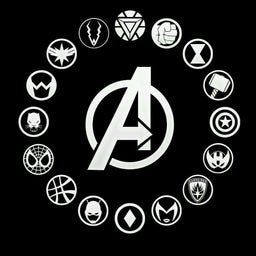

|  | Heróis Vilões |
O objetivo dos super-heróis é, geralmente, a defesa do bem, da paz, o combate ao crime, tomando para si a responsabilidade de ser protagonista na luta do bem contra o mal. No entanto, um super-herói também pode ser um personagem real ou fictício que inspira qualquer pessoa a agir melhor. Alguns super-heróis usam seus poderes para ajudar a combater o crime diário, além de combater ameaças contra a humanidade de supervilões, que são suas contrapartes criminosas. Muitas vezes, pelo menos um desses supervilões será o arqui-inimigo de um super-herói.
Um bom herói só existe quando há um grande vilão à altura para desafiá-lo. Por isso mesmo, é por essa figura dúbia e, às vezes, completamente detestável que somos verdadeiramente apaixonados. São os criminosos, os bandidos, os loucos e os tiranos que nos atraem e chamam a nossa atenção.